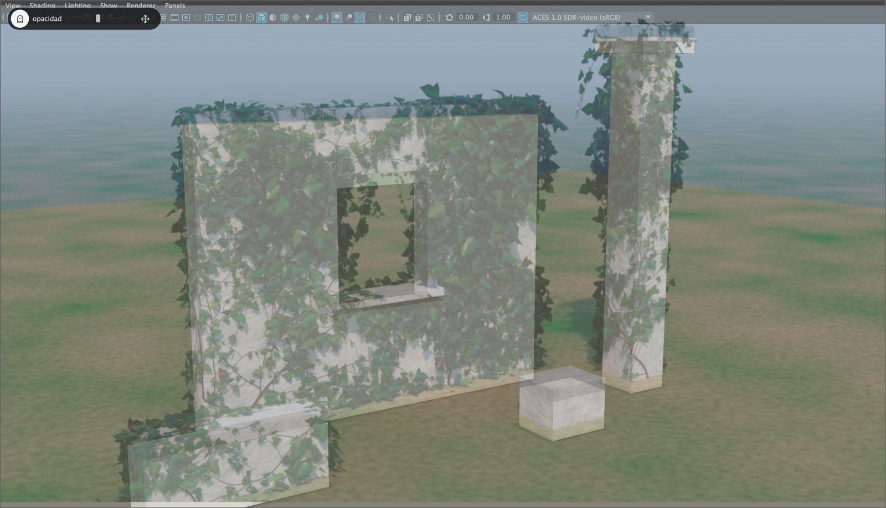
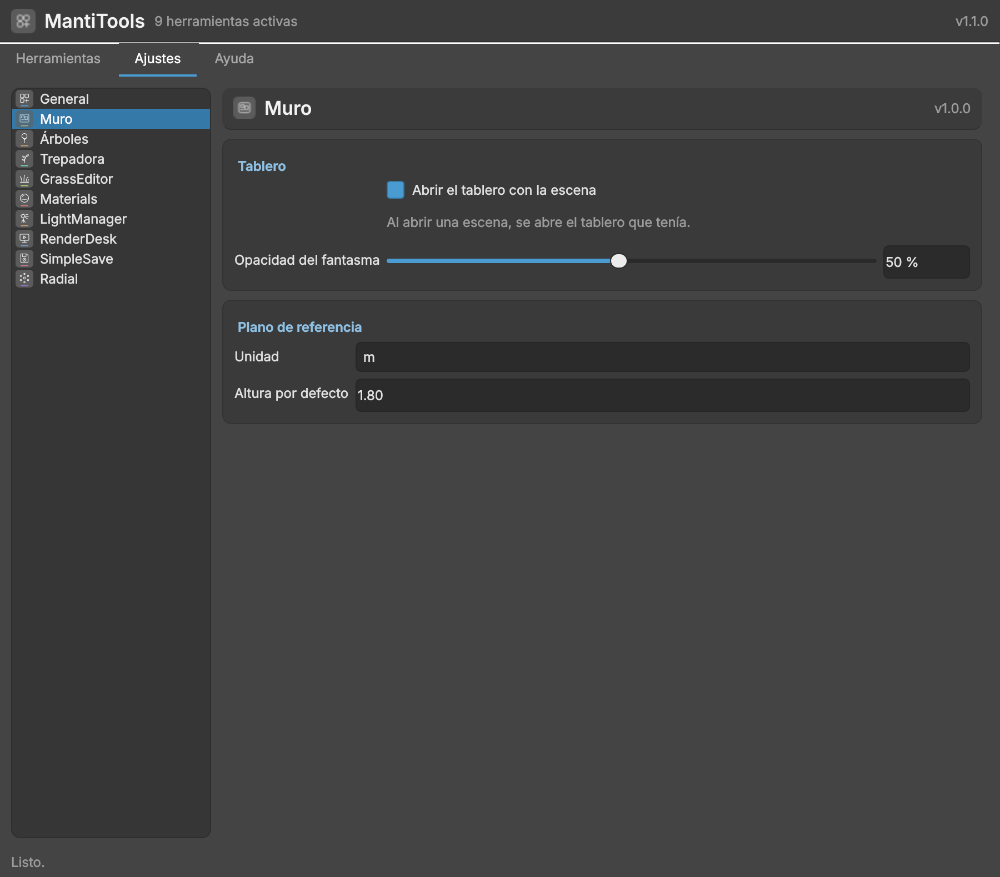

Para qué sirve
Muro es un tablero infinito para tus imágenes de referencia y tus notas, dentro de Maya. Cada escena tiene el suyo y se abre con ella, así que las referencias viajan con el proyecto. Puedes ponerlo transparente encima del visor mientras modelas, sacar planos de imagen a escala o tomar colores para tus materiales.
Abrirlo
Clic en el icono Muro del estante, o MantiTools › Muro › Abrir tablero. La primera vez crea un tablero llamado «referencias» dentro del proyecto, en sourceimages/muro. Si guardas la escena, la próxima vez que la abras se abrirá también su tablero.
Meter referencias
- Arrastra imágenes desde tu carpeta o desde el navegador hasta el tablero.
- Pega con Ctrl+V (⌘+V en Mac) con el ratón encima del tablero.
- Captura el visor con el botón de la cámara (o clic derecho en el icono › Capturar visor).
Las imágenes se copian dentro del proyecto: aunque borres el original, el tablero las conserva.
Moverse y ordenar
| Quiero… | Cómo |
|---|---|
| Acercar o alejar | Rueda del ratón; en trackpad, pellizcar |
| Desplazarme | Alt + botón central, Espacio + arrastrar o dos dedos en trackpad |
| Encuadrar lo seleccionado / verlo todo | F / A |
| Mover, escalar, girar | Arrastrar; la esquina blanca escala y el punto de arriba gira |
| Agrupar en un marco con título | Ctrl+G |
| Ver qué puedo hacer con algo | Clic derecho sobre ello |
Anotar
| Herramienta | Tecla | Uso |
|---|---|---|
| Nota | N | Doble clic para escribir. **negrita** y *cursiva* funcionan |
| Lista de tareas | L | Clic en una línea para tacharla |
| Marcador | Clic derecho › Marcador aquí | Un número en un punto de la imagen, con su nota |
| Flecha | W | De un elemento a otro |
| Lápiz | P | Dibujo libre. Esc para dejar la herramienta |
Ver mejor
| Tecla | Qué hace |
|---|---|
| G | Gris: para comparar valores sin el color |
| H | Voltear: con la imagen volteada se notan los fallos de proporción |
| C | Recortar: arrastra un rectángulo sobre la imagen |
Llevarlo a Maya
- Plano de imagen a escala: clic derecho en una imagen › Plano de imagen. Marca A en la cabeza y B en los pies, escribe la altura real y elige la cámara (front, side o top). El plano aparece a escala con los pies en el suelo, en la capa «muro_referencias».
- Cuentagotas (I): clic en un color de la imagen. Si tienes un objeto seleccionado en Maya, su material toma ese color. Los colores quedan abajo a la izquierda.
- Fantasma: el tablero se queda transparente encima del visor y puedes seguir modelando. Vuelve a pulsar el fantasma de la pastilla para salir. Su opacidad se ajusta en la ventana central.

Compartir
En el menú del tablero (☰):
- Exportar tablero (.zip): un archivo con todo, para entregar o compartir.
- Importar tablero (.zip): abre uno que te pasen (también en el clic derecho del icono).
- Exportar imagen PNG: una imagen del tablero entero, o de un marco desde su clic derecho.
Consejo
Ctrl+Z deshace solo dentro del tablero, sin tocar tu escena.
En el estante
| Cómo | Orden |
|---|---|
| Clic en el icono | Abrir el tablero |
| Clic derecho | Nuevo tablero |
| Clic derecho | Importar tablero |
| Clic derecho | Capturar visor |
| Clic derecho | Fantasma |
Ajustes en MantiTools

Tablero
| Ajuste | Valores | Qué hace | Clave |
|---|---|---|---|
| Abrir el tablero con la escena | Sí / no | Al abrir una escena, se abre el tablero que tenía. | abrir_con_escena |
| Opacidad del fantasma | 5 a 100 % | opacidad_fantasma |
Plano de referencia
| Ajuste | Valores | Qué hace | Clave |
|---|---|---|---|
| Unidad | m, cm, mm, ft, in | unidad_altura |
|
| Altura por defecto | 0,01 a 10000 | altura_plano |